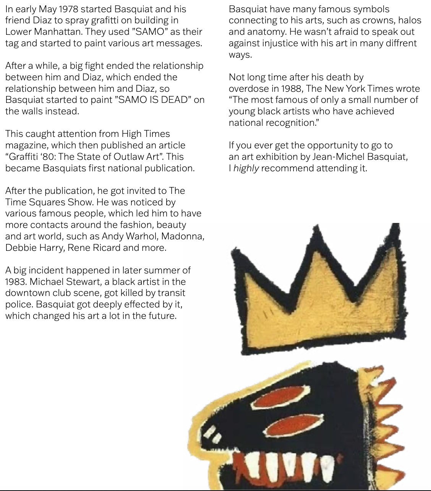

At the beginning of the studies, I made coffetable book. It's about a life from a very famous painter, Jean-Michel Basquiat.
Basquiat was born on December 22, 1960, Brooklyn, New York City. He was the second of four children to Matilde
Basquiat. Matilde took her son to art Museums frequently, which made him fall in love with art.
He was a very clever child, who learned to read and write when he was only 4 years old. Later on in his school years, he would skip school with friends, and started to illustrate for the school newspaper.


